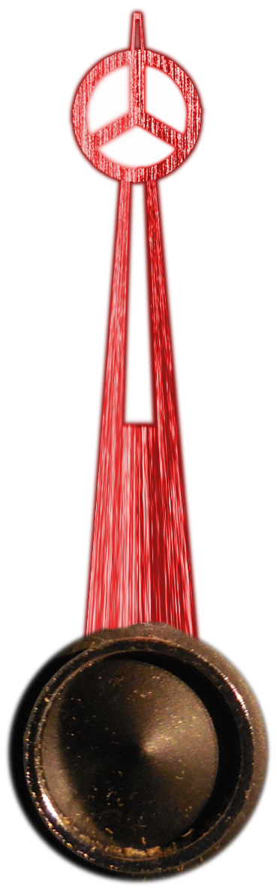

Chrome Border
Position Marker from Luxury Car Mercedes AMG
Standard white marker:
White background with a light
Metal Background (too strong)
Standard ponter
First Rolex Type Pointer
Pointer changed to green from an oldtimer car
